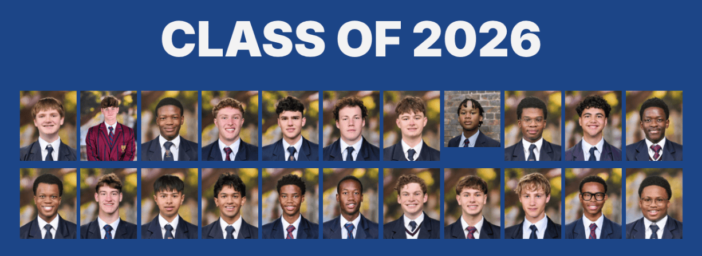

A Farewell to the Matrics
Vusi Mathonsi, Housemaster
As the final exam pen is set down and a quiet stillness settles over the quad, a distinct realisation takes hold: the long-anticipated year has finally reached its horizon. Standing together in the uniform worn with pride over the years, the nostalgia arrives not as a single memory, but as a swell of shared early-morning practices, electric warcries, and quiet moments in the common room. For the Matrics of 2026, taking that final step across the threshold is both an ending and a powerful testament to the leadership, unity, and heart given to the House.
Every matric group leaves its own fingerprint on Nash House, and the Class of 2026 made theirs unmistakable. Looking back, it was the mix of big House moments and small, repeatable routines that defined their time here.
From intense Kahoot battles to the unmistakable energy of a House braai, you knew how to bring people together when it mattered. Who could forget Ntsako taking the stage for a solo singing performance at House Assembly, or the Nash sleepover back in Lower V organised by Thero and Maka? Those moments turned housemates into real mates and gave younger guys a clear picture of what belonging to Nash House feels like.
Having both the Head of School and Custos rooted in Nash House - alongside Christopher Chapman's steady leadership of the House - set a high standard. You led with presence and pride, showing that leadership inside the House isn't just about titles or notices; it's about setting the tone, backing the guys around you, and carrying responsibility well.
Not every memory happened under bright lights. There were early mornings at Line-up chasing boys to go shave, Interhouse losses that stung in the moment, and Interhouse wins that made the effort worth it. Together, the rebuilds after tough results and the celebrations after good ones gave this cohort real character.
Leaving Nash House doesn't mean leaving behind what shaped you - it means carrying those lessons into new rooms, teams, and challenges. Looking at everything this group has navigated, five takeaways stand out for life after school:
- Consistency Over Miracles: Success beyond school rarely comes from one-off heroic efforts; it is built through daily, quiet commitment. Getting the basics right every day - showing up, working hard, and maintaining high standards - is what drives long-term progress.
- Life as a Marathon, Not a Sprint: Early setbacks do not define the end of your story. Whether facing challenges at university, in a career, or in personal pursuits, resilience and the ability to bounce back matter far more than a perfect start.
- Step Out of Your Comfort Zone & Step Up: Leadership and growth require moving past passive participation. Don't be passengers in life; take initiative and step up when needed - even when it feels daunting or uncomfortable, like taking on a new role without prior experience.
- The Power of Inclusive Unity: Strong teams and organisations thrive when everyone belongs and contributes, regardless of background or role. Life beyond school calls for working respectfully alongside diverse people toward a shared standard.
- Legacy Over Standings: Trophies, temporary rankings, and individual accolades fade quickly over time. What truly endures is the culture you build, how you treat others, the integrity you hold onto, and the lasting friendships you form along the way.
As you step into what comes next, know that Nash House is proud of who you have become and excited to see the mark you make beyond these walls. Go well, Class of 2026 - you will always have a home here.
Posted 27 November 2026